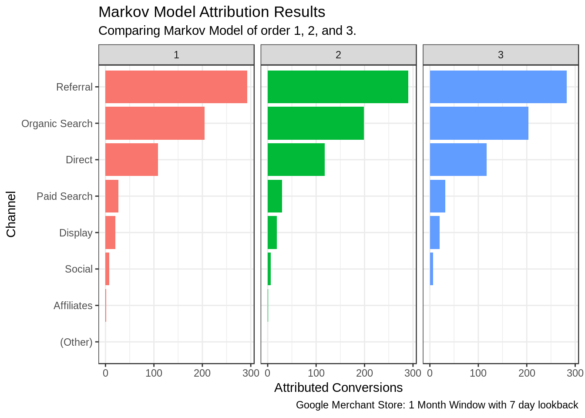
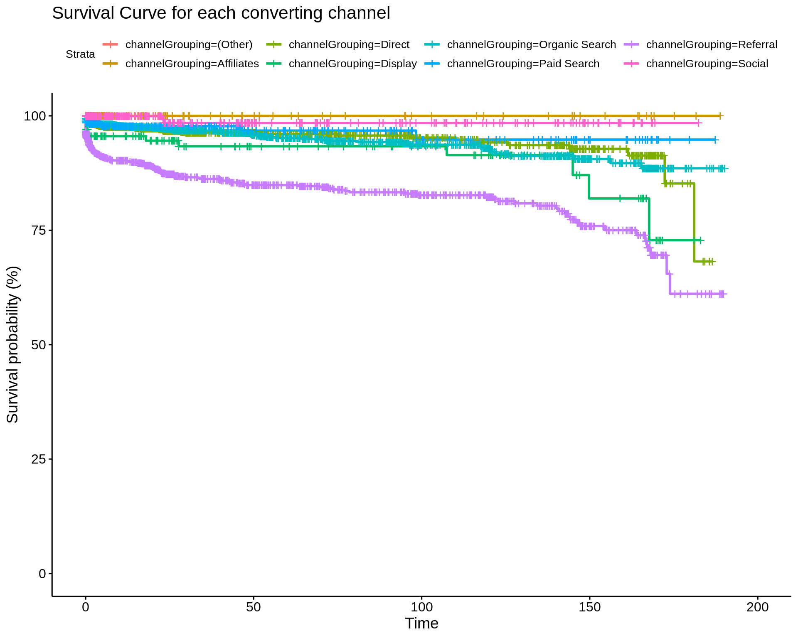
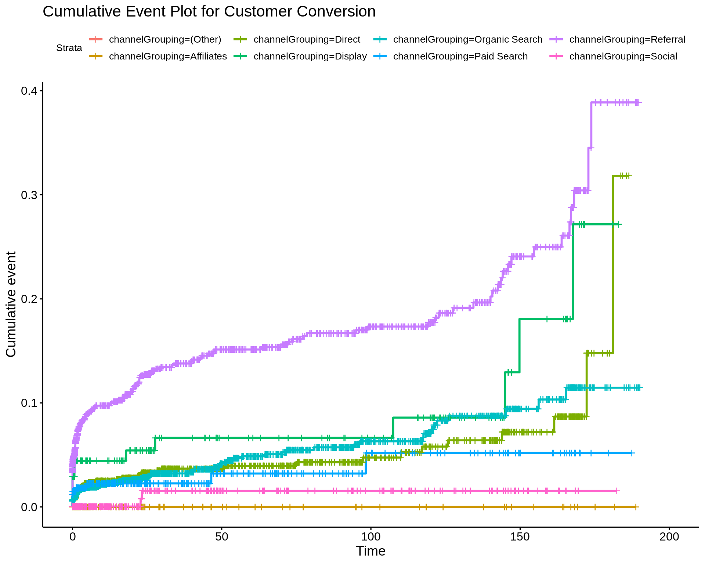

9 Algorithmic Methods
Now we move into algorithmic methods for modelling marketing attribution.
These methods use more advanced statistical algorithms to create a data driven model for assigning conversion credit to channels in a multi-touch point conversion pathway.
9.1 Markov Chains
The first method we will review are markov chains. We introduced these in section 4.3.3.
First we load the required packages. In this case we again use ChannelAttribution
as well as the tidyverse and lubridate packages for data manipulation and
date handling. We also read in our raw results from BigQuery that contains the event log and
timestamps of visits, complete with channel and outcome.
library(tidyverse)
library(lubridate)
library(ChannelAttribution)
paths_raw <- read_csv('bigquery/bq-results.csv')| fullVisitorId | visitStartTime | channelGrouping | outcome |
|---|---|---|---|
| 07184911138250312 | 2017-01-18 06:57:50 UTC | (Other) | non_conversion |
| 07184911138250312 | 2017-01-18 07:40:31 UTC | (Other) | non_conversion |
| 07184911138250312 | 2017-01-18 08:18:50 UTC | (Other) | non_conversion |
| 3112985461863519829 | 2017-01-25 20:42:23 UTC | (Other) | non_conversion |
| 4720404071621394560 | 2017-01-18 07:02:40 UTC | (Other) | non_conversion |
| 6060076679741207514 | 2017-01-18 06:59:27 UTC | (Other) | non_conversion |
| 0003297619580760716 | 2017-01-08 05:50:50 UTC | Direct | non_conversion |
| 00035794135966385 | 2017-01-20 12:46:25 UTC | Direct | non_conversion |
| 0004867638405459898 | 2017-01-15 14:22:26 UTC | Direct | non_conversion |
| 0005604256236421547 | 2017-01-24 21:04:26 UTC | Direct | non_conversion |
Next we need to transform the data. We use the same procedure as in Section 7.1. We now have one row per conversion path, with total conversions/non-conversions.
| path | conversion | non_conversion |
|---|---|---|
| Referral | 178 | 4015 |
| Organic Search | 137 | 21659 |
| Direct | 71 | 9308 |
| Referral > Referral | 55 | 553 |
| Organic Search > Organic Search | 39 | 1507 |
| Direct > Direct | 26 | 803 |
| Referral > Referral > Referral | 26 | 132 |
| Paid Search | 21 | 1348 |
| Display | 12 | 256 |
| Direct > Referral | 11 | 60 |
We now call the markov_model() function from the ChannelAttribution package. It accepts
arguments for the data frame, the variable that contains the conversion path,
the variable that encodes both number of conversions and non conversions and the
order of the markov model.
Below we can see it’s output is a list of distinct channels with the total attributed conversions per channel. The channel that receives the most credit is ‘Referral’, followed by ‘Organic Search’.
As a marketer we could multiply these by the average conversion value to get a total attributed value for each channel. By comparing this to the cost of marketing in each channel we get a robust calculation for ROI.
In fact, if the actual sales revenue per customer is recorded we can go
one step further and have this model calculate the attributed value without
having to estimate using the average value. This is handled with the argument
var_value.
fit_m <- markov_model(Data = paths,
var_path = 'path',
var_conv = 'conversion',
var_null = 'non_conversion',
order = 1)
fit_m## channel_name total_conversions
## 1 Referral 289.1465114
## 2 Organic Search 209.6476986
## 3 Direct 107.5363407
## 4 Paid Search 27.3277169
## 5 Display 18.8606878
## 6 Social 7.5544153
## 7 (Other) 0.1014015
## 8 Affiliates 1.8252278We can also iterate on this by calculating a 1, 2, and 3 order markov model.
Below we display a chart of the results. As we can see, there is not much difference in the results.
fit_mult <- map_dfr(.x = c(1, 2, 3),
.f = ~markov_model(Data = paths,
var_path = 'path',
var_conv = 'conversion',
var_null = 'non_conversion',
order = .x),
.id = "order")
9.2 Survival Analysis
The next model we demonstrate is survival analysis. Here we define ‘survival’ as non-conversion and the event of interest is when a customer converts.
As usual we start by loading the data and the required packages.
library(tidyverse)
library(lubridate)
library(survival)
library(survminer)
paths_raw <- read_csv('bigquery/bq-results.csv')| fullVisitorId | visitStartTime | channelGrouping | outcome |
|---|---|---|---|
| 07184911138250312 | 2017-01-18 06:57:50 UTC | (Other) | non_conversion |
| 07184911138250312 | 2017-01-18 07:40:31 UTC | (Other) | non_conversion |
| 07184911138250312 | 2017-01-18 08:18:50 UTC | (Other) | non_conversion |
| 3112985461863519829 | 2017-01-25 20:42:23 UTC | (Other) | non_conversion |
| 4720404071621394560 | 2017-01-18 07:02:40 UTC | (Other) | non_conversion |
| 6060076679741207514 | 2017-01-18 06:59:27 UTC | (Other) | non_conversion |
| 0003297619580760716 | 2017-01-08 05:50:50 UTC | Direct | non_conversion |
| 00035794135966385 | 2017-01-20 12:46:25 UTC | Direct | non_conversion |
| 0004867638405459898 | 2017-01-15 14:22:26 UTC | Direct | non_conversion |
| 0005604256236421547 | 2017-01-24 21:04:26 UTC | Direct | non_conversion |
The data transformation steps here are a little different.
We want to condense our data into one row per customer. For our analysis, three key pieces of information are required:
- The interval of time:
- For converting customers, between the first visit and the purchase time.
- For non-converting customers, between the first visit and the last recorded visit.
- The outcome: 1 for converted, 0 for non-converted.
- The channel used to convert.
Firstly, this analysis is slightly different. We aren’t strictly attributing credit between channels, but rather analysing at various points in time, what is the probability of a customer converting through any given channel.
Secondly, we have made some assumptions around excluding (or censoring) customers who don’t convert at the point of the most recent visit. In effect we are declaring these customer lost to follow up. An alternative method would be to calculate the time interval for non-converters right up until the end of the analysis period. Both are ok, but given we constrained our look back period to just 7 days we will go with our chosen method.
surv_data <- paths_raw %>%
mutate(visitStartTime = ymd_hms(visitStartTime)) %>%
group_by(fullVisitorId) %>%
mutate(mindate = min(visitStartTime),
maxdate = max(visitStartTime)) %>%
filter(visitStartTime == maxdate) %>%
mutate(time = (maxdate - mindate)/3600,
status = ifelse(outcome == "conversion", 1, 0)) %>%
dplyr::select(fullVisitorId, time, status, channelGrouping)## # A tibble: 10 x 4
## # Groups: fullVisitorId [10]
## fullVisitorId time status channelGrouping
## <chr> <drtn> <dbl> <chr>
## 1 2019849659101397972 26.6350000 secs 0 Organic Search
## 2 0602100966737642308 0.0000000 secs 0 Organic Search
## 3 6693833242689696465 0.8844444 secs 0 Organic Search
## 4 7956907751868983697 0.1047222 secs 0 Paid Search
## 5 9483710368265788494 0.0000000 secs 0 Organic Search
## 6 2139227959373761194 0.0000000 secs 0 Social
## 7 2973441778247906125 0.0000000 secs 0 Organic Search
## 8 6325419508306646730 0.0000000 secs 0 Direct
## 9 9873658775382341673 0.0000000 secs 0 Organic Search
## 10 7744114977873417883 0.0000000 secs 0 Organic SearchNext we create a special object called a survival object using the Surv function.
surv_object <- Surv(time = surv_data$time, event = surv_data$status)We can now compute our estimate for a survival curve using the survfit function.
We include a grouping variable of the converting channel. This will calculate one survival curve per group so we have a basis for comparison.
fit_surv <- survfit(surv_object ~ channelGrouping, data = surv_data)## Call: survfit(formula = surv_object ~ channelGrouping, data = surv_data)
##
## n events median 0.95LCL 0.95UCL
## channelGrouping=(Other) 2 0 NA NA NA
## channelGrouping=Affiliates 963 0 NA NA NA
## channelGrouping=Direct 10555 106 NA 181 NA
## channelGrouping=Display 408 20 NA NA NA
## channelGrouping=Organic Search 24208 202 NA NA NA
## channelGrouping=Paid Search 1769 26 NA NA NA
## channelGrouping=Referral 5372 302 NA 174 NA
## channelGrouping=Social 9764 6 NA NA NAThe results are best viewed graphically.
It is important to note that the terminology ‘survival’ in this context means ‘non-conversion’. It shows, up to a given time along the x-axis, what is the probability of a customer not converting through a particular channel.

What we want is the complement of this, that is, the cumulative event plot.
We can see that Referral channel achieves high levels of conversion very quickly, representing a valuable channel. This is followed by Display, however as time goes on, after 150 hours (~6 days) from first visit, channels such as ‘Direct’ and ‘Organic Search’ have a strong conversion probability. This indicates that advertising and referral traffic are essential to raising awareness early on, and after this, customer recall of the brand is high with customers returning days later via direct and organic channels.
